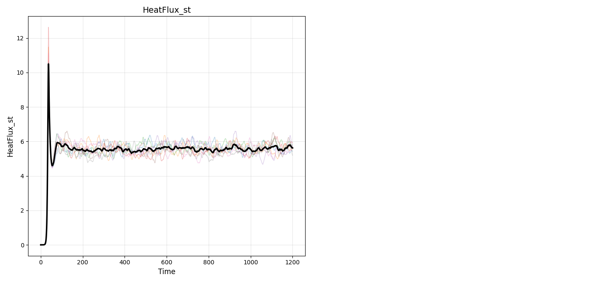

Note
Go to the end to download the full example code.
Ensemble Analysis¶
This tutorial analyses multiple simulation runs together with the
Ensemble object, using the eight GX members in data/gx.
Instead of one long trace, an ensemble combines several shorter runs. QUENDS provides three ways to turn an ensemble into a mean with an honest uncertainty:
Ensemble Average – average the members onto a common grid, then analyse that single averaged trace,
Serialization (pooled block means) – pool the per-member block means,
Inverse-Variance-Weighted (IVW) – weight each member’s mean by its inverse variance.
For single-trace analysis, see the DataStream Class guide. Trim/statistics
parameters follow the QUENDS paper analysis notebooks for the stellarator GX
ensemble (method="threshold", window_size=50, start_time=100,
threshold=0.19).
Import QUENDS
import glob
import quends as qnds
COL = "HeatFlux_st"
plotter = qnds.Plotter()
Data Loading¶
Ensemble.from_files loads each CSV into a member DataStream.
gx_files = sorted(glob.glob("data/gx/ens_run_*.csv"))
ens = qnds.Ensemble.from_files(gx_files, COL)
print("ensemble members:", len(ens.members()))
ensemble members: 8
Plotting all members together with the ensemble average.
plot = plotter.plot_ensemble_with_average(
ens, variables_to_plot=[COL], condensed_legend=True, show=True
)

Ensemble Average Approach¶
Average the members onto a common time grid, then analyse that single averaged trace exactly like a single run.
Build the averaged DataStream and check stationarity.
avg = ens.compute_average_ensemble()
print("averaged trace rows:", len(avg))
print("avg is_stationary:", avg.is_stationary(COL))
averaged trace rows: 1536
avg is_stationary: {'HeatFlux_st': True}
Trim the averaged trace, then read off its ESS.
avg_trimmed = avg.trim(
method="threshold", window_size=50, start_time=100, threshold=0.19
)
print("avg sss_start:", avg_trimmed.trim_metadata.get("sss_start"))
print("avg ESS:", avg_trimmed.effective_sample_size())
avg sss_start: 138.414657
avg ESS: {'results': {'HeatFlux_st': 30}}
The Ensemble Average estimate of the mean and its uncertainty. We analyse the
trimmed averaged trace (average -> trim -> statistics), so the transient is
removed before the mean and its standard error are computed. NB: the
ensemble_average estimator does not trim internally – running it on a
raw, un-trimmed average folds the transient into the variance and greatly
inflates the uncertainty.
ea_stats = avg_trimmed.compute_statistics(method="non-overlapping")[COL]
print("Ensemble Average ->", ea_stats)
Ensemble Average -> {'mean': 5.5510209219323, 'mean_uncertainty': 0.01575656347414312, 'variance': 0.003724039387720516, 'confidence_interval': (5.5201380575229795, 5.58190378634162), 'pm_std': (5.535264358458156, 5.566777485406443), 'effective_sample_size': 30, 'window_size': 90, 'n_short_averages': 15, 'ess_blocks': 14.477125553918892, 'se_effective_n': 15.0, 'se_method': 'iid_blocks', 'independence_status': 'independent', 'independent': True, 'ljungbox_lags': [5, 10], 'ljungbox_pvalues': [0.9656617927811396, 0.7704831644157795], 'ljungbox_pvalue': 0.7704831644157795, 'ci_method': 'normal', 'confidence_level': 0.95}
Serialization (Pooled Block Means) Approach¶
Rather than averaging the traces, pool the per-member block means. Trim every member first, then aggregate across members.
ens_trimmed = ens.trim(
column_name=COL, method="threshold", window_size=50, start_time=100, threshold=0.19
)
print("members stationary:", ens.is_stationary(COL)["results"])
print("ESS (pooled_block_means):", ens_trimmed.effective_sample_size(COL)["results"])
members stationary: {'Member 0': {'HeatFlux_st': True}, 'Member 1': {'HeatFlux_st': True}, 'Member 2': {'HeatFlux_st': True}, 'Member 3': {'HeatFlux_st': True}, 'Member 4': {'HeatFlux_st': True}, 'Member 5': {'HeatFlux_st': True}, 'Member 6': {'HeatFlux_st': True}, 'Member 7': {'HeatFlux_st': True}}
ESS (pooled_block_means): {'HeatFlux_st': 94.5327798342771}
The serialization estimate of the mean and its uncertainty, on the trimmed members.
ser_stats = ens_trimmed.compute_uncertainty(
method="pooled_block_means", column_name=COL
)["results"][COL]
print("Serialization ->", ser_stats)
Serialization -> {'mean': 5.557640702919049, 'variance': 0.03425679861075724, 'ess_blocks': 94.5327798342771, 'n_short_averages': 106, 'mean_uncertainty': 0.01903628388744325, 'mean_uncertainty_sem_n': 0.01797713395912992, 'mean_uncertainty_sem_ess': 0.01903628388744325, 'se_method': 'sem_ess (members_not_all_independent)', 'warning': 'Some members used best_p window. Not all members passed independence; using ESS-based SEM.', 'confidence_interval': (5.520329586499661, 5.594951819338438), 'pm_std': (5.538604419031606, 5.5766769868064925), 'window_size': 142, 'member_window_sizes': [94, 63, 148, 159, 183, 61, 136, 153], 'window_size_summary': 142, 'window_size_summary_method': 'median', 'window_size_min': 61, 'window_size_max': 183, 'independent': False, 'independence_status': 'some_independent', 'ljungbox_pvalue': 0.04358017934862203, 'ljungbox_pvalues': [0.25911370840667075, 0.39832409156593546, 0.8504579481952937, 0.5180172131388829, 0.04358017934862203, 0.17796031273257243, 0.3944473931033883, 0.5533989750903026], 'ljungbox_lags': [5, 5, 5, 5, 5, 5, 5, 5], 'ci_method': 'normal', 'confidence_level': 0.95, 'member_all_independent': False, 'member_some_best_p': True}
Inverse-Variance-Weighted (IVW) Approach¶
Combine the per-member means weighting each by its inverse variance, so better-resolved members count more. Trimming/stationarity are as above.
print("ESS (ivw):", ens_trimmed.effective_sample_size(COL, technique="ivw")["results"])
ivw_stats = ens_trimmed.compute_uncertainty(method="ivw", column_name=COL)["results"][COL]
print("IVW ->", ivw_stats)
ESS (ivw): {'HeatFlux_st': 105.54692307933976}
IVW -> {'mean': 5.559406165790554, 'mean_uncertainty': 0.016522267850964212, 'confidence_interval': (5.527022520802664, 5.591789810778444), 'pm_std': (5.54288389793959, 5.575928433641518), 'variance': 0.0407394787551331, 'ess_blocks': 105.54692307933976, 'n_short_averages': 134.0, 'se_method': 'ivw_member_means', 'warning': None, 'window_size': 96, 'member_window_sizes': [94, 63, 96, 97, 112, 61, 97, 97], 'window_size_summary': 96, 'window_size_summary_method': 'median', 'window_size_min': 61, 'window_size_max': 112, 'independence_status': 'some_independent', 'independent': False, 'ljungbox_pvalue': 0.3175166299288299, 'ljungbox_pvalues': [0.25911370840667075, 0.39832409156593546, 0.558906032577861, 0.24488043587906716, 0.025300415087136468, 0.17796031273257243, 0.651464279497223, 0.2241837636841732], 'ljungbox_lags': [5, 10], 'ci_method': 'normal', 'confidence_level': 0.95, 'individual': None}
Computed on the trimmed steady-state data, the three approaches give consistent means with comparable uncertainties – a useful cross-check on an ensemble.
for name, r in [
("Ensemble Average", ea_stats),
("Serialization", ser_stats),
("IVW", ivw_stats),
]:
print(f"{name:18s} mean={r.get('mean'):.4f} uncertainty={r.get('uncertainty', r.get('mean_uncertainty')):.4f}")
Ensemble Average mean=5.5510 uncertainty=0.0158
Serialization mean=5.5576 uncertainty=0.0190
IVW mean=5.5594 uncertainty=0.0165
Total running time of the script: (0 minutes 0.912 seconds)
Gallery generated by Sphinx-Gallery